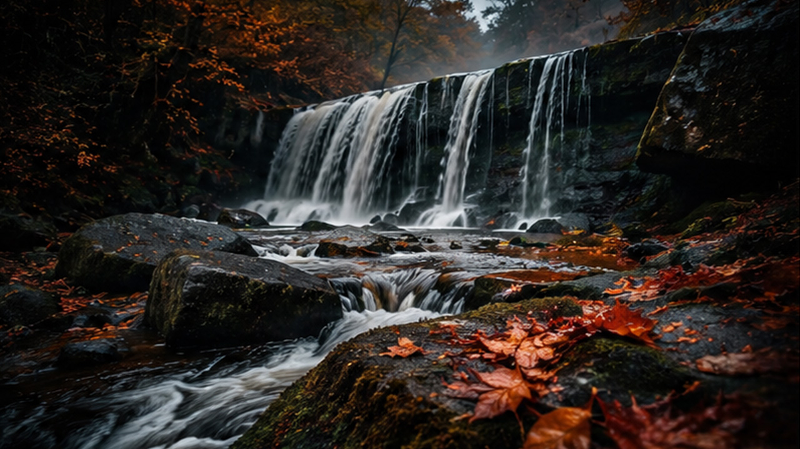

The sound of flowing water has long been associated with relaxation, meditation and deep sleep. Among nature's most calming sounds, waterfalls hold a special place. Their continuous flow creates a natural white noise effect that helps block distractions and promotes a peaceful state of mind.
This 4K ASMR video features the largest plain waterfall in Europe, capturing one hour of soothing waterfall sounds in stunning detail. The powerful yet calming sound of cascading water creates the perfect atmosphere for sleep, relaxation, studying and stress relief.
Many people use nature sounds as part of their nightly routine. Waterfalls produce a steady, consistent sound that helps mask unwanted background noise and encourages the mind to relax.
Unlike sudden sounds that can interrupt sleep, the natural rhythm of falling water creates a comforting environment that supports deeper and more restful sleep.
Listening to waterfall sounds can provide a variety of benefits for both mental and physical well-being.
Unlike mountain waterfalls that tumble down steep cliffs, plain waterfalls flow across relatively flat landscapes. This creates a unique visual and acoustic experience that combines power with tranquility.
The largest plain waterfall in Europe is an impressive natural landmark where massive volumes of water move continuously through the landscape. Watching the water flow while listening to its soothing sound creates an immersive connection with nature.
Whether you're winding down after a busy day, practicing meditation or looking for background sounds while working, waterfall ambience can help create a calm and focused environment.
The combination of stunning 4K visuals and natural water sounds allows viewers to experience the peaceful atmosphere of this remarkable location from anywhere in the world.
Put on your headphones, close your eyes and let the sound of cascading water wash away stress and distractions. This one-hour waterfall ASMR recording offers a simple and effective way to relax, recharge and reconnect with the natural world.
If you enjoy nature sounds, sleep videos and relaxing outdoor scenery, this waterfall experience provides the perfect escape into one of Europe's most beautiful natural landscapes.
Enjoy the complete outdoor experience on YouTube.
Watch on YouTube